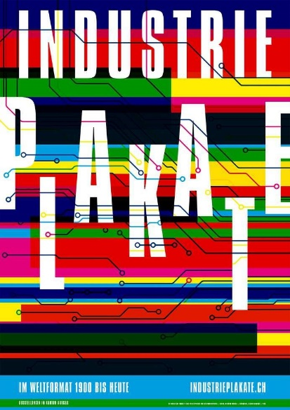

Formen Komposition
Quadrat


Die Quadrate im linken Bild sehen aus als ob sie weiter weg wären, weil sie kleiner sind und weiter oben am Rand stehen. Die Distanz zwischen den einzelnen Quadraten sieht bei beiden Bildern etwa gleich aus.
Dreieck


Die Dreiecke links sind weiter entfernt aber vom Auge her etwa gleich Nahe wie beim Bild Rechts wo sie direckt neben einander stehen.
Kreis


Hier wollte ich demonstrieren, dass je weiter oben und je kleiner die Punkte sind desto weiter weg erscheinen sie. Die Punkte Linie in der Mitte ist bei beiden Bildern identisch. Die kleinen Punkte links hätten vielleicht noch etwas kleiner sein können damit der Effeckt noch verstärkt wird.
Schriften
Figur Grund


Das sind Figuren die aus stark vergrösserten Buchstaben gemacht wurden. Durch das starke
Vergrössern und die limitierte Fläche entstehen neue Formen aus denen man die vorherigen
Buchstaben kaum mehr erkennt.
Font: OCR B
Bild 1: R
Bild 2: A
Bild 3: M
Das 3. Bild ist mir am besten gelungen.
Schrift Vergleich

Diese Arbeit habe ich zusammen mit Daniel gemacht. Zusammen haben wir die Fonts, die
wir zugeteilt bekamen verglichen. Meiner war OCR B und er hatte den Font Peignot genauer
untersucht.
Das ist die Skizze die wir gemacht haben befor wir das richtige Plakat mit Photoshop
gestalteten.

Das ist das Plakat das am Ende entstanden ist.
Die Unterschiede sind ziemlich gross.
Da OCR B dafür gmacht ist von Maschinen gelesen zu werden,
sind die Buchstaben und Ziffern ziemlich gleichmässig und sauber und haben keine dünnen Serifen
und keine spizen Enden.
Bei Peignot war der Erfinder viel freier. Ein starkes Merkmal vom Font ist, dass viele
Buchstaben wie Grossbuchstaben aussehen aber halb so gross sind.
Farben
Farbenlehre


Die 2 Kästchen in der Mitte sehen so aus als ob es 2 verschiedene Farben wären, obwohl es die gleiche Farbe ist.


Bei diesen 2 Bildern ist es umgekehrt. Die 2 kleinen Kästchen in der Mitte der grossen Flächen sehen aus, also ob sie die gleiche Farbe hätten. Aber wenn man die 2 kleinsten Kästchen unten anschaut, kann man klar sehen, dass sie unterschiedlich sind.
Farben Stimmung


TODO notizen
Bild Collage
Match Cut
TODO
Weissraum
TODO
Entwurfsprozesse
.png)
.png)
.png)
TODO
Bild im Raster


TODO entwurfs prozess
Sketches
Sketch 1 - Hand
handSketch 2 - Küche
kücheSketch 3 - Fluchtpunkte
fluchtpunkteSektch 4 - Kopf
kopfPlakat Arbeit mit Dominic Burger
Diese Arbeit habe ich zusammen mit Dominic gemacht. Wir haben uns beide je ein Plakat aus der Austellung der 100 besten Plakate in Luzern ausgesucht, sie analysiert und dann verglichen.
Industrie Plakate
Grunewalder Schnaps
Vergleich

Aufbau: Abstrakt, eckig
Farbkombination: Weiss / bunt
Lenkung des Blickes: Von links nach rechts
Wirkung: Industriell, technisch
Menschlich, eckig
Weiss / grün
Von oben nach unten
Gesellschaftlich, freundschaftlich
Designer Vorträge
Hier sind alle Vorträge der Designer aufgelistet und was ich dazu gesammelt habe. Die Vorträge sind hier nicht nochmals verlinkt, da sie ja alle auf dem Ilias sind.
Adrian Frutiger
Adrian Frutiger zählz zu den massgebenden Schöpfern der Schweizer Typographie. In seinem Leben hat er ganze 32 Schriften entwickelt die heute noch häufig gesehen werden. Er hat die Schrift OCR B entworfen die für Maschinen lesbar ist. Ebenfalls hat er die ASTRA-Frutiger erfunden, die heute auf praktisch jeder Entfernungstafel auf den schweizer Autobahnen zu finden ist.
April Greiman


April Greiman wurde 1948 in den USA geboren und lehrte am Kansas City Art Institute und in Basel an der Schule für Gestaltung als Trans-media-artistin. Besonders auf dem Gebiet der digitalen Medien war sie eine der einflussreichsten Grafikerinnen. April Greiman’s Stil nennt sich California-New-Wave-Stil, welchen sie vor allem in ihrem Studio namens «Made in Spain» anwendet. Ihre Arbeiten beinhalten unter anderem räumliche Qualitäten, wirken für den Betrachter oft schwebend und sind in Schichten übereinander angeordnet. Diese Eindrücke werden natürlich durch den Stil von April Greiman gefördert. Der Stil «The New Wave Typography» wurde durch Punk und der postmodernen Sprachtheorie beeinflusst und hält sich auf keinen Fall an gitterbasierte Anordnungskonventionen. April Greiman’s berühmteste Arbeit ist das grösste Ölbild der Welt am Wilshire-Vermont LA subway terminal mit dem Namen «Hand holding a bowl of rice».
Casey Reas

Casey Edwin Barker Reas (geb. 1972), oder C. E. B. Reas, ist ein amerikanischer Künstler, dessen konzeptuelle, prozedurale und minimale Kunstwerke Ideen durch die zeitgenössische Linse von Software erforschen. Im Jahr 2001 schuf Reas zusammen mit dem MIT-Doktoranden Ben Fry die Programmiersprache Processing. Die Verarbeitung wird weltweit von Tausenden von Künstlern und Designern sowie von Pädagogen eingesetzt, die die Grundlagen des Programmierens an Kunst- und Designschulen vermitteln.
David Carson

David Carson is am 8. September 1956 geboren und ist ein amerikanischer Surfer, Typograph, Designer und graphiker. Seit 1992 was er Graphiker bei Ray Gun, einer Musikfachzeitschrift. Sein ziel dort war es, dass die Zeitschrift nicht vorhersehbar sein sollte und immer wieder eine neue Überraschung bringen. Carson war vorallem dafür bekannt, dass er Designregeln gebrochen hat und die Leserlichkeit und Typographie im Hintergrund stand zugunsten der Gesamtkomposition.
DIA-Studio
DIA-Studio ist eine Designagentur, die sich auf kinetische Identitäten und typografische Systeme spezialisiert hat. Das Studio hat sehr viele interessante Designs kreiert, darunter sehr viele die animiert sind.
Wolfgang Weingart

Wolfgang Weingart ist ein Deutscher Typograph. Er ist 1941 geboren. Er ist vorallem
für sein Werk "My Way to Typography" im Jahre 2000 bekannt. Davor war er für über 30 Jahre
Lehrer in weiterführender Typographie in Basel.
“What’s the use of being legible,
when nothing inspires you to take
notice of it?”
-Wolfgang Weingart, My way to Typography
Johnston Kingston


Hinter dem Designstudio Johnson Kingston stehen die beiden Designer Michael Kryenbühl und Ivn Weiss, die beide mit ihrer gemeinsamen Abschlussarbeit an der Hochschule Luzern promovierten, wofür sie auch den Schweizerischen Design Preis gewannen. Dafür designten sie auch eine eigene Schrift, die sich «Aki News Bold» nennt und welche sie in ihrer Arbeit über Aki Kaurismäkis Filme verwendeten. Die beiden Designer hinter Johnson Kingston sind zudem Freelancer, die Bücher und Plakate gestalten und Vorträge zu Kommunikationsdesign, Gestaltung mit digitalen und vernetzten Medien halten.
Joost Grootens

Joost Grootens studierte Architekturdesign und gründete sein eigenes Studio 1995. Der Designstil dieses Designers ist klar, direkt und versucht komplexe Informationen zu organisieren. Ein beispielhaftes Werk, dass Joost Grootens Stil sehr gut wiedergibt, ist das Bild in welchem er den Einband aller seiner Bücher fotografiert hatte und sie anschliessend zu einem Bild zusammenfügte und darunter die jeweilige Typologie des Buches auflistete.
Otto "Otl" Aicher

Otto Aicher wuchs, während der Nazionalsozialistischen Diktatur in Deutschland in Ulm auf und gründete später auch die Hochschule für Gestaltung in Ulm. Otto Aicher’s Stil beinhaltete vor allem Piktogramme. Beispiele seiner Designarbeiten finden sich beispielsweise an den olympischen Spielen 1972 oder am Frankfurter Flughafen wieder.
Paul Rand

Paul Rand wurde 1914 als Perutz Rosenbaum in New York geboren. Er designte verschiedene Unternehmenslogos und machte sich den sogenannten europäischen Designerstil «Swiss Style» zu eigen. Dadurch gewann er bereits mit 23 internationale Anerkennung als Art Designer. Dies gelang ihm, weil er begann die vorherrschenden ästhetischen Normen zu brechen und er signierte seine Werke wie ein Künstler. Dabei war galt für Paul Rand stets der Grundsatz «weniger ist mehr» und für ihn konnten auch einfache Formen etwas symbolisches haben.
Paula Scher


Paula Scher (geboren 1948) ist eine Graphik Designerin. Sie hat viele Marken- und Publikationsdesigns für sehr bekannte Firmen wie z.B. Microsoft entworfen. Ihre Designs waren sehr revolutionär im Vergleich zu den Herkömmlichen und haben die Designindustrie verändert.
Studio Feixen


Gegründet wurde das Studio Feixen in Luzern durch Felix Pfäffli und Raphael Leutenegger. Spezialisiert sind die beiden unter anderem auf graphic, interior, fashion und type design, sowie auf Animationen. International arbeiten sie mit renommierten Marken wie Nike, Google oder Hermès zusammen, aber auch in Luzern konnten die beiden bei Institutionen wie dem Theater Luzern oder auch der Hochschule Luzern mitwirken.
Joseph Müller-Brockmann

Porträt Josef Müller-Brockmann
«…und de isch, kei scheiss, en so fetti
Spinne uf minere Schultere gsässe!»
Joseph Müller-Brockmann ist 1914 geboren und hat nach abgebrochener Lehre also selbständiger
Grafiker gearbeitet. Er hat viele Rastersystem für die visuelle Gestaltung entworfen und seine
Werke basierten grundsätzlich fast immer auf einem Raster. Später hat er no Bücher geschrieben
wie z.B. das Gestaltungsbuch für die Schweizerischen Bundesbahnen.
Saul Bass

Saul Bass lebte von 1920 bis 1996 in Amerika und spezialisierte sich nach dem Designstudium in New York auf die Typographie. Speziell an seinen Arbeiten war, dass er Bild und Text vermischte, dadurch eine neue Animationstechnik schuf wodurch er die Filmszene revolutionierte, sodass sein Stil noch hete erkennbar ist. Das bedeutendste Werk von Saul Bass ist «Why Man Creates», wofür er 1969 auch einen Oscar erhielt. Des Weiteren betrieb Saul Bass auch sein eigenes Studio und gestaltete Filmplakate, Filmvorspänne (unter anderem für Alfred Hitchcock), Logos (z. B. das Kleenex-Logo) und so weiter auch als Freelancer für Warner Bros.
Stefan Sagmeister

"Work your ass off. Don't be an asshole."
Stephan Sagmeister is im Jahr 1962 geboren und ist ein Grafikdesigner und Typograph.
Seine Werke waren sehr bizarr und oftmals auch kontrovers. Er scheute sich auch nicht
seinen eigenen Körper zu zeigen und hat mit diesen unkonventionellen Werken viel
Aufregung und Diskussionen verursacht.
The Rodina
The Rodina sind ein Designstudio bestehend aus Tereza und Vit. Dieses Designsutio spezialisierte sich auf Video, User experience, Installationen und Visual Identities.